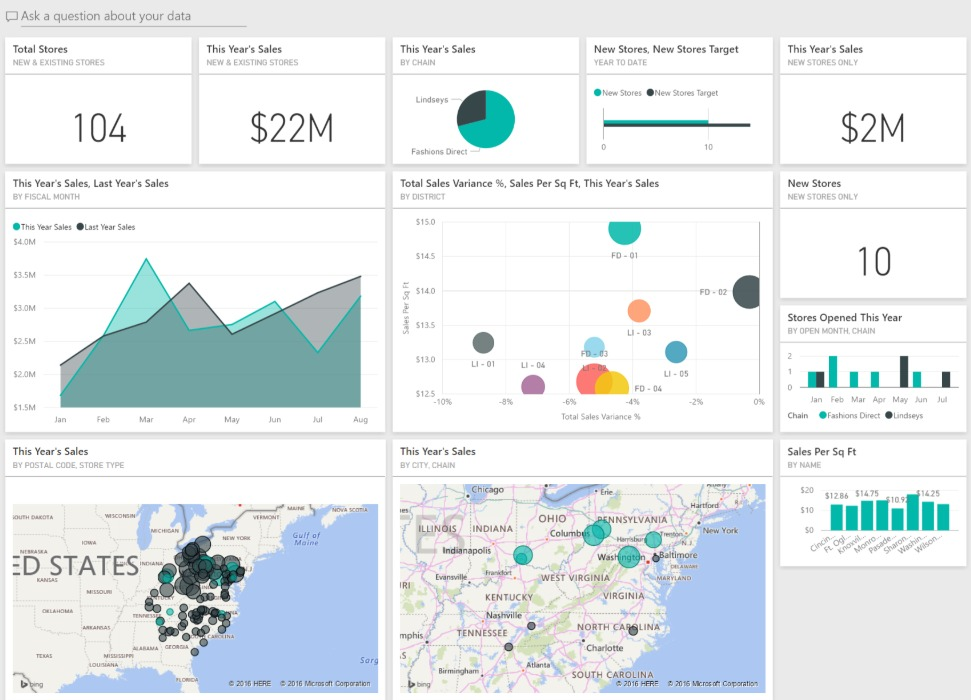
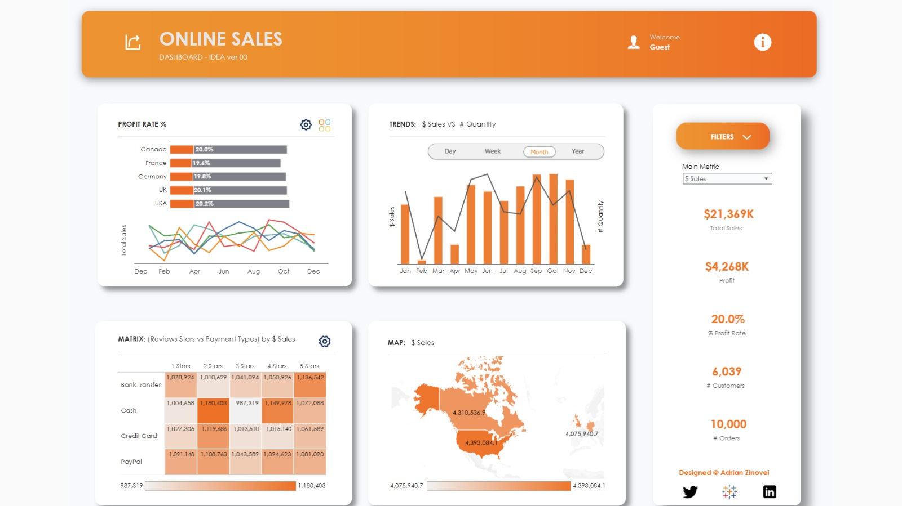
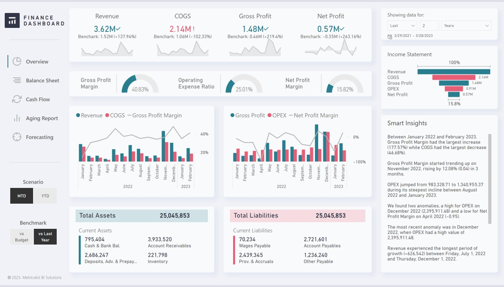
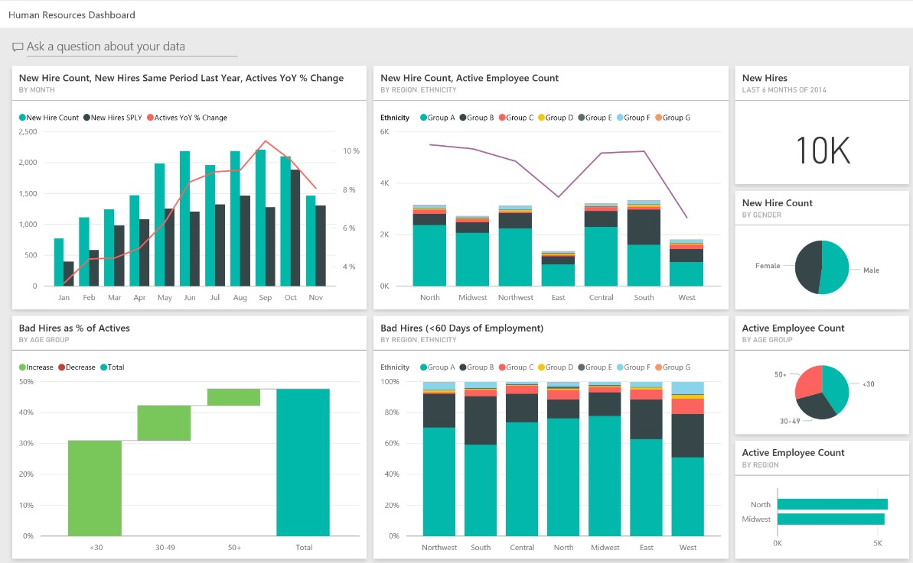
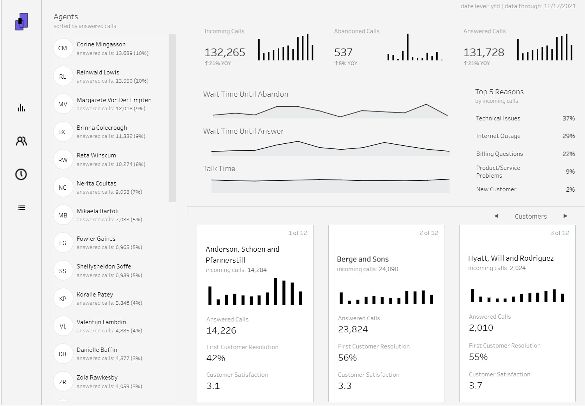

I am Victor Anyadibe
Name: Victor Anyadibe
Profile: Data Analyst / IT Auditor
Email: anyadibe@gmail.com
Phone: +1 469-858-8429
Location: Texas, USA
Resume: View Full Resume (PDF)
Core Skills
Professional Summary
Data and IT audit professional with 10+ years of progressive experience analyzing business, technology, risk, compliance, control, and operational data across complex environments. Experienced in data validation, data quality analysis, anomaly identification, risk assessment, reporting, trend analysis, and translating complex datasets and audit evidence into actionable business insights.
Strong background working with databases, applications, systems, access records, control data, and audit documentation to identify discrepancies, vulnerabilities, and process improvement opportunities. Skilled in analytical problem-solving, data-driven decision-making, stakeholder communication, and structured reporting. Seeking a Data Analyst, Business Data Analyst, IT Data Analyst, or Reporting Analyst opportunity.
Resume
My education, certifications, and professional experience in data analytics, IT audit, and risk management
Education
Bachelor of Science (B.Sc.) in Accounting
2010
Enugu State University of Science and Technology
Certifications
Data Analyst Certificate
Microsoft
SQL Certification
University of Michigan
Fundamentals of Visualization with Tableau
University of California
CompTIA Security+
CompTIA
Certified Information Systems Auditor (CISA)
ISACA
Technical Skills
- Data Analytics & Reporting: Data analysis, data validation, data quality, trend analysis, anomaly detection, KPI reporting
- Business Intelligence & Visualization: Data visualization, analytical reporting, dashboard concepts, executive reporting, performance analysis
- Data Quality & Auditing: Data reconciliation, data integrity, completeness testing, exception analysis, audit data analysis
- Risk & Business Analysis: Risk assessment, process analysis, control analysis, root cause analysis, process improvement
- Technical & Professional Skills: Database analysis, application analysis, documentation, stakeholder management, problem-solving, communication
Professional Experience
IT Auditor
May 2022 – Present
AGILESEVENTEEN LLC
- Analyze risk, control, system, and operational information to identify data inconsistencies, control gaps, and potential business risks.
- Perform testing and validation of review activities to verify data accuracy, completeness, and compliance with established standards.
- Analyze risk and control information to support reporting, escalation, issue resolution, and management decision-making.
- Review documentation and supporting evidence to identify exceptions, trends, and areas requiring corrective action.
- Develop structured analysis and recommendations for resolving complex data, risk, and control issues.
- Collaborate with internal teams, business partners, and management to interpret analytical findings and communicate actionable recommendations.
- Support risk reporting initiatives by organizing findings, validating evidence, and maintaining accurate documentation.
- Apply analytical problem-solving techniques to evaluate business processes and identify opportunities for improved control effectiveness.
Technologies Used: Microsoft Excel, Data Analysis, Data Validation, Risk Assessment, Audit Reporting, Data Documentation
IT Auditor
July 2020 – April 2022
NEXTBYTE LLC
- Performed detailed analysis of audit evidence, business data, system information, and control documentation to identify risks, discrepancies, and exceptions.
- Conducted data completeness and accuracy testing across operating systems, databases, applications, network devices, and security environments.
- Analyzed access records, authorization data, role assignments, and segregation-of-duties information to identify potential control weaknesses.
- Performed access recertification analysis by validating reports, reviewing management approvals, and identifying incomplete or inaccurate access information.
- Tested application controls related to data accuracy, processing, application changes, and security to support SOX compliance.
- Analyzed information provided by business entities and performed completeness testing to validate the accuracy and reliability of reported data.
- Prepared analytical summaries of findings, exceptions, supporting evidence, and recommendations for management review.
- Tracked historical audit results and corrective actions to identify recurring issues and monitor improvement trends.
- Reviewed SSAE 18 attestation reports and supporting information to evaluate control requirements and data reliability.
- Communicated analytical findings and recommendations to stakeholders across different levels of management.
Technologies Used: Microsoft Excel, Database Analysis, Data Validation, Data Reconciliation, Audit Analytics, SOX, ITGC, SSAE 18, Reporting
IT Auditor / Compliance Officer
February 2017 – July 2020
RANSTAD USA
- Analyzed business systems, security information, fraud indicators, and compliance data to identify operational and technology risks.
- Performed detailed reviews of IT systems, applications, and infrastructure data to identify vulnerabilities, exceptions, and process gaps.
- Evaluated access-control, change-management, and system-development data to assess control effectiveness and identify improvement opportunities.
- Reviewed IT policies, procedures, and supporting documentation against regulatory and industry requirements.
- Identified emerging risk patterns through analysis of operational and compliance information and recommended mitigation strategies.
- Prepared detailed reports summarizing analytical findings, identified risks, recommendations, and corrective action plans.
- Organized audit evidence and supporting documentation to improve data traceability and management reporting.
- Supported analysis and protection of banking technology assets valued at more than $2M.
Technologies Used: Microsoft Excel, Data Analysis, Risk Analytics, Compliance Reporting, IT Systems, Audit Documentation, Data Validation
Control Risk Officer
May 2014 – January 2017
DIAMOND BANK
- Performed data analysis using audit software to identify anomalies, unusual patterns, control exceptions, and potential business risks.
- Supported IT audit planning by analyzing business processes, risk information, and historical control data.
- Conducted stakeholder interviews and gathered business information to support process and data analysis.
- Reviewed control evidence, audit workpapers, and business documentation to validate accuracy and completeness.
- Assisted in developing analytical testing procedures based on business requirements, industry standards, and regulatory expectations.
- Documented analytical findings, exceptions, supporting evidence, and recommendations for management review.
- Monitored internal control testing results and analyzed recurring deficiencies to support corrective action.
- Contributed to a 19% reduction in control deficiencies through structured control monitoring and follow-up analysis.
- Participated in client meetings to communicate findings, explain analytical results, and recommend process improvements.
Technologies Used: Microsoft Excel, Audit Analytics, Data Analysis, Risk Assessment, Data Validation, Reporting, Control Testing
Projects
Global Superstore Sales & Profit Analysis
Duration: 3 Weeks | SQL, Excel, Power BI
- Cleaned and transformed Global Superstore sales data to prepare it for business analysis.
- Used SQL to extract and analyze sales, profit, customer, product, and regional information.
- Created KPIs for total sales, total profit, quantity sold, average sales, and profit margin.
- Built an interactive Power BI dashboard to analyze regional, category, segment, and product performance.
- Performed trend analysis to identify high-performing and underperforming products and markets.
- Analyzed sales and profitability trends to generate actionable business insights.
Covid-19 Data Tracker & Analysis
Duration: 2 Weeks | SQL, Excel, Power BI
- Collected and structured COVID-19 datasets for analytical reporting.
- Cleaned and validated records to improve data accuracy and consistency.
- Used SQL to analyze confirmed cases, recoveries, deaths, and regional trends.
- Created KPIs to monitor total cases, recovery rates, mortality rates, and daily changes.
- Developed an interactive Power BI dashboard with date and geographic filters.
- Analyzed time-based trends and presented insights through clear data visualizations.
Recent Projects
Aviation analytics and data visualization projects









HR Analytics Dashboard
Project Summary
The HR Analytics Dashboard provides actionable insights into employee performance, attrition trends, diversity ratios, and workforce demographics. It enables HR managers to monitor KPIs such as retention rate, employee satisfaction, and hiring pipeline efficiency for strategic workforce planning.
Key Features
- Attrition and retention analysis
- Workforce demographic visualization
- Employee satisfaction trend tracking
- Recruitment and training analysis
- Department-level KPI insights
- Dynamic filtering by role, location, and tenure
Technologies Used
Finance Performance Tracker
Project Summary
The Finance Performance Tracker visualizes revenue, expenses, profit margins, and budget utilization. It empowers finance teams to analyze spending efficiency, forecast financial performance, and improve cost management.
Key Features
- Expense vs. revenue trend analysis
- Profit margin tracking by category
- Budget allocation and variance reports
- Year-over-year growth comparison
- Financial KPI summary cards
Technologies Used
Marketing Campaign Dashboard
Project Summary
This dashboard provides a comprehensive overview of marketing campaign effectiveness, including reach, conversion rates, and ROI. It allows teams to analyze multi-channel performance and optimize marketing spend.
Key Features
- Channel-wise performance tracking
- Campaign ROI visualization
- Lead-to-sale conversion funnel
- Customer acquisition cost monitoring
- Ad spend vs. conversion trend analysis
Technologies Used
Recruitment Funnel Dashboard
Project Summary
The Recruitment Funnel Dashboard visualizes the entire hiring process — from application to onboarding. It highlights hiring bottlenecks, conversion rates, and recruiter efficiency to enhance HR decision-making.
Key Features
- Candidate pipeline visualization
- Stage-wise conversion rates
- Recruiter performance tracking
- Hiring source effectiveness analysis
- Time-to-hire and cost-per-hire metrics
Technologies Used
Contact
Get in touch for data analytics, IT audit, business intelligence, or collaboration opportunities
Location
Texas, USA
Call Me
+1 469-858-8429
Email Me
anyadibe@gmail.com